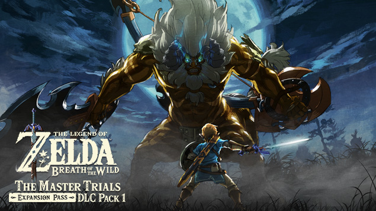
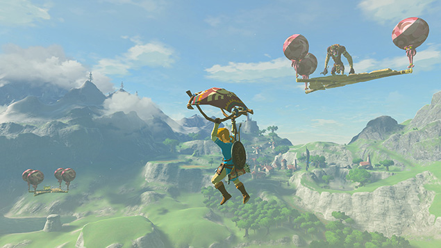

Olá. Sou Tominaga, um designer de jogos. Também sou o diretor de The Legend of Zelda ™: Breath of the Wild Expansion Pass.
De Trials of the Sword a Hero's Path Mode, posso recomendar a você tudo o que está incluso neste pacote. No entanto, se eu tivesse que escolher apenas um recurso, minha recomendação seria a segunda jogada no Modo Mestre, onde os inimigos são classificados e representam desafios muito mais difíceis.
O Modo Master não é apenas um modo de dificuldade mais difícil. Também inclui inimigos que não aparecem no modo normal e oferece uma nova experiência de jogo. Para avançar na história no modo Master, suas habilidades e conhecimentos adquiridos ao jogar o modo normal serão definitivamente úteis. É extremamente divertido explodir através do Modo Master enquanto utilizo totalmente minhas experiências anteriores!
Além disso, mesmo que você já tenha vencido o jogo uma vez, deve haver muitas coisas que você não percebeu ou viu antes no vasto mundo de Hyrule. Recomendo alterar a ordem em que você visita locais como cidades e vilarejos no segundo jogo - isso pode lhe dar uma impressão diferente. Acima de tudo, espero que você aproveite o mundo de Hyrule ainda mais. Por último, estamos trabalhando arduamente para entregar o DLC Pack 2, chamado The Champions 'Ballad, neste feriado.
Ao comprar o Passe de Expansão The Legend of Zelda: Breath of the Wild, você terá acesso ao DLC Pack 1 e ao Pack 2 (quando for lançado). Estamos trabalhando arduamente no DLC Pack 2 agora, garantindo que você possa explorar este mundo por ainda mais tempo, então fique ligado. Agora, vá curtir The Master Trials!